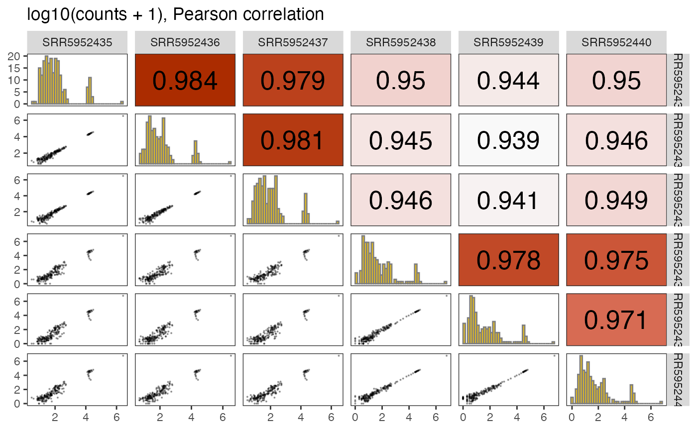

Make pairs plot of selected assay from a SummarizedExperiment object
plotPairs.RdConstruct a pairs plot of all columns of a given assay. The lower-triangular panels display the scatter plots, the upper-triangular ones print out the (Pearson or Spearman) correlations, and the diagonal panels show histograms of the respective columns.
Usage
plotPairs(
se,
selAssay = "counts",
doLog = TRUE,
pseudocount = 1,
corMethod = "pearson",
histBreaks = 40,
pointsType = "points",
corSizeMult = 5,
corSizeAdd = 2,
pointSize = 0.1,
pointAlpha = 0.3,
colorByCorrelation = TRUE,
corrColorRange = NULL,
addIdentityLine = FALSE
)Arguments
- se
A SummarizedExperiment object, e.g. the output of
summarizeExperiment- selAssay
Character scalar, the assay to use as the basis for the pairs plot.
- doLog
Logical scalar, whether or not to log-transform the values before plotting.
- pseudocount
Numeric scalar, the pseudocount to add to the values before log-transforming (if
doLogisTRUE).- corMethod
Either "pearson" or "spearman", the type of correlation to calculate.
- histBreaks
Numeric scalar, the number of breaks in the histograms to put in the diagonal panels.
- pointsType
Either "points", "smoothscatter", "scattermore" or "scattermost" (the latter two require the "scattermore" package to be installed), determining the type of plots that will be made.
- corSizeMult, corSizeAdd
Numeric scalars determining how the absolute correlation value is transformed into a font size. The transformation is corSizeMult * abs(corr) + corSizeAdd.
- pointSize, pointAlpha
Numeric scalars determining the size and opacity of points in the plot.
- colorByCorrelation
Logical scalar, indicating whether the correlation panels should be colored according to the correlation value.
- corrColorRange
Numeric vector of length 2, providing the lower and upper limits of the color scale when coloring by correlation. Both values should be positive; the same range is used for negative correlations. If
NULL(the default), the range is inferred from the data.- addIdentityLine
Logical scalar, indicating whether the identity line should be added (only used if
pointsType = "points").
Examples
se <- readRDS(system.file("extdata", "GSE102901_cis_se.rds",
package = "mutscan"))[1:200, ]
plotPairs(se)
